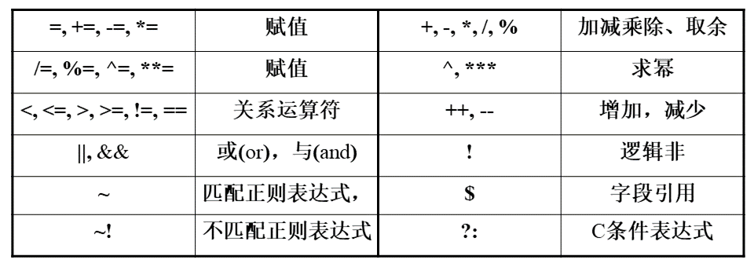

linux之shell语法基础
Shell脚本和编程语言很相似，也有变量和流程控制语句，但Shell脚本是解释执行的，不需要编译，Shell程序从脚本中一行一行读取并执行这些命令，相当于一个用户把脚本中的命令一行一行敲到Shell提示符下执行。
脚本执行：
1 | chmod a+x test.sh |
Shell脚本中用#表示注释，但第一行开头的#!则例外，它表示该脚本使用后面指定的解释器/bin/sh解释执行。
变量定义与调用
环境变量与本地变量
按照惯例，Shell变量由全大写字母加下划线组成，有两种类型的Shell变量：
- 环境变量
环境变量可以从父进程传给子进程。 - 本地变量
只存在于当前Shell进程。定义或赋值一个变量时，等号两边都不能有空格。一个变量定义后仅存在于当前Shell进程，它是本地变量，用export命令可以把本地变量导出为环境变量，定义和导出环境变量通常可以一步完成，也可分两步完成：1
VARNAME=value
用unset命令可以删除已定义的环境变量或本地变量。1
2
3export VARNAME=value
PATH="/home/bin/"
export PATHShell变量不需要明确定义类型，事实上Shell变量的值都是字符串。1
unset VARNAME
注意，在定义变量时不用$，取变量值时要用$。用${VARNAME}可以表示它的值，在不引起歧义的情况下也可以用$VARNAME表示它的值。外部参数变量、自定义变量与列变量
Shell语言的变量调用，有外部参数变量$1，内部自定义变量$variation，还有行和列变量$2。
传入外部参数给脚本：例如./extract.sh Pt1 O1
$0 脚本本身
$1 第一个参数，值为Pt1
$2 第二个参数，值为O1
awk列模式变量 $1, $2, … 表示第一列，第二列，，，，注意只在awk内部起作用
sed调用
sed一般使用单引号，sed引用shell变量时使用双引号即可，因为双引号是弱转义，不会去除$的变量表示功能，而单引号为强转义，会把$作为一般符号表示，所以不会表示为变量。
1 | sed -i "s/$pattern1/$pattern2/g" inputfile |
awk调用
awk在调用shell变量时，需要使用参数-v,举例说明：
1 | awk -v b=$count '{sum += $1};END {print sum/b}' filename |
其中$count为自定义变量，每调用一次变量都要加一个-v参数，后面使用自定义变量的时候，就不用加$了，直接是b就好了；$1是列变量，只存在于awk命令的单引号中。
引号与通配符
通配符
- * 匹配0个或多个任意字符
- ? 匹配一个任意字符
- [若干字符] 匹配方括号中任意一个字符的一次出现
1 | cp test* ../newfile/ # 匹配以test开头的文件 |
命令代换与算术代换
- 由`反引号括起来的也是一条命令，Shell先执行该命令，然后将输出结果立刻代换到当前命令行中；也可以用$()表示
1
2
3
4DATE=`date`
echo $DATE
DATE=$(date) - $(())或$[]中的Shell变量取值将转换成整数，只能用+-*/和()运算符，并且只能做整数运算。
1
2
3VAR=21
echo $(($VAR+3))
echo $[3*5+6]
单引号与双引号
Shell脚本中的单引号和双引号一样都是字符串的界定符，单引号用于保持引号内所有字符的字面值，即使引号内的\和回车也不例外，但是字符串中不能出现单引号。
grep命令
grep命令是一种强大的文本搜索工具，它能使用正则表达式搜索文本，并把匹配的行打印出来。
grep [options] pattern file
[options]主要参数：
正则表达式参数控制
-E：扩展正则表达式，不用”\”号进行转义
1 | grep ‘w\(es\)t.*\1′ aa |
-i：不区分大小写。
-w ：只匹配整个单词，而不是字符串的一部分(如匹配’magic’，而不是’magical’)，
输出控制
-n：显示匹配行及行号。
-v：显示不包含匹配文本的所有行。
- -color=auto：可以将找到的关键词部分加上颜色的显示。
-h：查询多文件时不显示文件名。
-r：要求搜索子目录
-l：查询多文件时只输出包含匹配字符的文件名。
-L：查询多文件时只输出不包含匹配字符的文件名。
-c：只输出匹配行的计数。
上下文输出控制
grep -C number pattern files：匹配的上下文分别显示number行，此处C是大写的
grep -A number pattern files：匹配的文本所在行后面显示number行，after
grep -B number pattern files：匹配的文本所在行前面显示number行，before
pattern正则表达式主要参数：
\： 忽略正则表达式中特殊字符的原有含义。
^：匹配正则表达式的开始行。
$: 匹配正则表达式的结束行。
<：从匹配正则表达式的行开始。
\>：到匹配正则表达式的行结束。
[ ]：单个字符，如[A]即A符合要求 。
[ - ]：范围，如[A-Z]，即A、B、C一直到Z都符合要求 。
.：所有的单个字符。
*：有字符，长度可以为0。
1 | grep man * # 会匹配 ‘Batman’、’manic’、’man’等， |
实例
用于搜索某些文件夹下包含想要找的信息的文件，比如搜索当前文件夹下及子目录中包含mag字符的文件，并输出文件名
1 | >>> grep -lr 'mag' * |
sed命令
sed option ‘script’ file1 file2 …
option参数
-r 使用扩展正则表达式
-n 默认情况下，sed程序在所有的脚本指令执行完毕后，将自动打印模式空间中的内容，-n选项可以屏蔽自动打印。
脚本指令操作
a 追加append
i 插入insert
d 删除delete
s 替换substitution
1 | sed "3a shell" file # 在输出file内容的第二行后添加"shell" |
- sed命令不会修改原文件，删除命令只表示某些行不打印输出，而不是从原文件中删去。
- 使用查找替换命令时，可以把匹配pattern1的字符串复制到pattern2中。pattern2中的&表示原文件的当前行中与pattern1相匹配的字符串
1
2
3
4
5
6
7
8
9
10
11
12>>> cat testfile
123
abc
456
>>> sed 's/bc/-&-/' testfile
123
a-bc-
456
>>> sed -r 's/([0-9])([0-9])/-\1-~\2~/' testfile
-1-~2~3
abc
-4-~5~6
pattern2中的\1表示与pattern1的第一个()括号相匹配的内容，\2表示与pattern1的第二个()括号相匹配的内容。 - 多条指令的话可以使用分号;隔开，也可以使用-e参数
1
2sed 's/pattern1/pattern2/;s/pattern3/pattern4/' ./testfile
sed -e 's/pattern1/pattern2/' -e 's/pattern3/pattern4/' testfile
另一种用法
/pattern/action
pattern为正则表达式，action为要执行的指令操作
1 | -n /pattern/p # 打印匹配pattern的行 |
awk命令
非常强大的文本分析工具，列处理命令
awk [option] ‘script’ file
awk [option] -f scriptfile file
option参数
-F fs 或 –field-separator fs
指定输入文件折分隔符，fs是一个字符串或者是一个正则表达式，如-F:表示以冒号分割
-v var=value 或 –asign var=value
赋值一个用户定义变量。
-f scripfile 或 –file scriptfile
从脚本文件中读取awk命令。
基本用法
awk ‘{[pattern] action}’ filenames # 只能用单引号
1 | awk '{print $1,$4}' test.log # 打印test.log文件中的第一列和第四列 |
高阶用法
 **awk 'BEGIN{ }{ }END{ }'** BEGIN{ }: 读入第一行文本之前执行的语句，一般用来初始化操作 { }: 逐行处理 END{ }: 处理完最后一行文本后执行，一般用来处理输出结果 awk可以引入各种条件、循环等，写出很复杂的用法。1 | awk '$1>2 && $2=="Are" {print $1,$2,$3}' test.log # 过滤第一列大于2并且第二列等于Are的行，并打印前三列 |
1 | >>> cat score.txt |
shell之字符串常用操作
插入字符串
sed “ni$word” file
n表示在第几行行首插入，i表示插入操作，$word表示要插入的字符串（变量）,file为待处理文本
替换字符串
替换字符
sed -n ‘s/string1/string2/g’ string
将string中所有匹配string1的字符串替换为string2
删除首字符
sed ‘s/^.//‘ string
删除指定行
sed ‘nd’ file
n表示第几行，d表示删除操作，不同行号用逗号隔开，不同命令用分号隔开，$可表示末行
1 | sed '1,2d;$d' file # 删除第一行第二行和最后一行 |
删除空行
sed ‘/^$/d’ file
符号^表示行首，$表示行尾；行首行尾间为空字符的情况即表示空行
提取字符串
按子串分割截取
**${varible#*string}** 从左往右，删除最短的一个以string结尾的子串，即截取第一个string子串之后的字符串
**${varible##*string}** 从左往右，删除最长的一个以string结尾的子串，即截取最后一个string子串之后的字符串
${varible%string}* 从右往左，删除最短的一个以string开头的子串，即截取最后一个string子串之前的字符串
${varible%%string}* 从右往左，删除最长的一个以string开头的子串，即截取第一个string子串之前的字符串
1 | >>> test='./NNH/SideOn-out/opt' |
按位置及长度提取字符串
${varible:start:len}:截取变量varible从位置start开始长度为len的子串。第一个字符的位置为0。
awk ‘{print substr($1,1,2)}’ file
$1代表文件file的第一列，第二项1表示字符位置，第三项表示提取字符长度
单个指定字符串
两个指定字符串间的文本（单行）
sed -r ‘s/string1(.*)string2/\1/g’ string
\1 表示表示前面括号中匹配到的字符串
两个指定字符串间的文本（多行）
sed -n ‘/string1/,/string2/p’ file
//之间的字符为指定的字符串，前后用逗号隔开
文本输出
格式化输出
column -t 生成表格，将文本按列左对齐
column -t -R1,2,3 生成表格，将文本按列左对齐，其中1,2,3列右对齐
awk ‘{printf “%16s%.6f\n”,$1,$2}’ file 将file文件中第1列占据16个字符右对齐，第2列按浮点数打印，并打印到小数点后六位
echo 打印输出
echo string # 普通字符串双引号可加可不加
1 | >>> echo "OK!";echo "It is a test" |
printf打印输出
printf format-string [arguments…] # format-string: 为格式控制字符串； arguments: 为参数列表。
1 | >>> printf "Hello, Tom\n" |
%s %c %d %f都是格式替代符；
%-10s 指宽度为10个字符（-表示左对齐，没有则表示右对齐），任何字符都会被显示在10个字符宽的字符内，如果不足则自动以空格填充，超过也会将内容全部显示出来。
%-4.2f 指格式化为小数，其中.2指保留2位小数。
数组
Shell只支持一维数组，数组用括号来表示，元素用”空格”符号分割开，初始化时不需要定义数组大小，数组元素的下标由0开始：
array_name=(value1 value2 … valuen)
1 | >>> atoms=() # 定义空数组 |
数学运算
运算执行命令
a. 用let指示数学运算，变量计算中不需要加上 $ 来表示变量。注意运算符号前后不能有空格！如果表达式中包含了空格或其他特殊字符，则必须用单（双）引号引起来。
1 | >>> let b=1+2;echo $b |
b. 用$[]表示数学运算。表达式在中括号内。有无空格都可以。例如命令echo $[1+2]，将输出结果3。
c. 用expr改变运算顺序。注意运算符号需要用空格隔开！
1 | >>> expr 1 + 2 |
d. 用bc表示数学运算。可以结合echo命令一起使用。若表达式有空格时须加引号。
e. 使用awk表示数学命令。
注意：只有bc和awk可做浮点运算！优先选用awk。也可将运算结果赋值给新的变量。
1 | >>> echo 2 | awk '{printf "%.3f\n", $1**0.5}' |
运算符
算数运算符
+ - * / % 加 减 乘 除 取余
== 用于比较两个数字，相同则返回true
!= 用于比较两个数字，不相同则返回true
注意：条件表达式要放在方括号之间，并且要有空格，例如: [$a==$b] 是错误的，必须写成 [ $a == $b ]。
使用expr运算时，乘号(*)前边必须加反斜杠(\)才能实现乘法运算；
关系运算符
关系运算符只支持数字，不支持字符串，除非字符串的值是数字。
-eq 检测两个数是否相等，相等返回 true。
-ne 检测两个数是否不相等，不相等返回 true。
-gt 检测左边的数是否大于右边的，如果是，则返回 true。
-lt 检测左边的数是否小于右边的，如果是，则返回 true。
-ge 检测左边的数是否大于等于右边的，如果是，则返回 true。
-le 检测左边的数是否小于等于右边的，如果是，则返回 true。
逻辑运算符
! 非运算，表达式为 true 则返回 false，否则返回 true。
&& 逻辑的 AND ，或着用 -a
|| 逻辑的 OR ，或者用 -o
字符串运算符
以a=”abc”, b=”def”为例
= 检测两个字符串是否相等，相等返回 true。 [ $a = $b ] 返回 false。
!= 检测两个字符串是否相等，不相等返回 true。 [ $a != $b ] 返回 true。
-z 检测字符串长度是否为0，为0返回 true。 [ -z $a ] 返回 false。
-n 检测字符串长度是否为0，不为0返回 true。 [ -n “$a” ] 返回 true。
$ 检测字符串是否为空，不为空返回 true。 [ $a ] 返回 true。
文件测试运算符
文件测试运算符用于检测 Unix 文件的各种属性。
-d file 检测文件是否是目录，如果是，则返回 true。 [ -d $file ] 返回 false。
-f file 检测文件是否是普通文件（既不是目录，也不是设备文件），如果是，则返回 true。 [ -f $file ] 返回 true。
-r file 检测文件是否可读，如果是，则返回 true。 [ -r $file ] 返回 true。
-w file 检测文件是否可写，如果是，则返回 true。 [ -w $file ] 返回 true。
-x file 检测文件是否可执行，如果是，则返回 true。 [ -x $file ] 返回 true。
-s file 检测文件是否为空（文件大小是否大于0），不为空返回 true。 [ -s $file ] 返回 true。
-e file 检测文件（包括目录）是否存在，如果是，则返回 true。 [ -e $file ] 返回 true。
shell流程控制
管道|
条件控制
if
1 | if condition |
if else
1 | if condition |
if elif else
1 | if condition1 |
for循环
1 | for var in item1 item2 ... itemN |
while循环
while循环用于不断执行一系列命令，也用于从输入文件中读取数据；命令通常为测试条件。
跳出循环，使用break跳出所有循环和continue跳出当前循环。
1 | while condition |
1 | # while循环可用于读取键盘信息。输入信息被设置为变量FILM，按<Ctrl-D>结束循环。 |
1 | # 无限循环 |
case多选择语句
多分枝选择结构，每个case分支用右圆括号开始，用两个分号;;表示break，即执行结束，跳出整个case … esac语句，esac作为结束标记。
取值后面必须为单词in。取值可以为变量或常数。匹配发现取值符合某一模式后，其间所有命令开始执行直至 ;;。如果无一匹配模式，使用星号*捕获该值，再执行后面的命令。模式支持正则表达式。
1 | case values in |
1 | echo '输入 1 到 3 之间的数字:' |
shell函数
其他
外部脚本引用
1 | source ./test.sh |